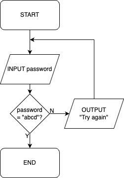

A flowchart is a diagram that depicts an algorithm.
A flowchart is a diagram that depicts an algorithm.
Flowcharts use these symbols:

Diagram 1 shows a flowchart of an algorithm to add two numbers together.
 Diagram 1
Diagram 1

Diagram 2 shows a flowchart containing selection.
 Diagram 2
Diagram 2

Diagram 3 shows a flowchart containing iteration.
 Diagram 3
Diagram 3

The algorithm keeps asking the user for a password until they get it correct.
Diagram 4 shows a flowchart of an algorithm.
 Diagram 4
Diagram 4

 What does Diagram 4 do?
What does Diagram 4 do?
Finds and outputs the index of an item in a list, or -1 if not found.